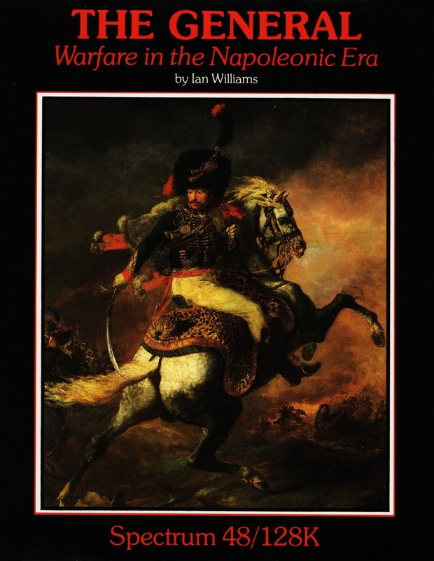
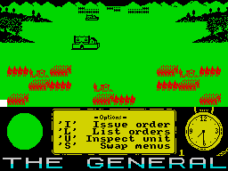

The General


{kind=link}

| Publisher: | CCS |
| Price: | £12.99 |
| Year: | 1989 |
| Source: | CRASH, Issue 74 |

It’s back to the days of the Napoleonic wars for the first of this month’s two CCS strategy games. You’re a general in charge of the armed forces of a small European state which Napoleon has his greedy little French eyes on. Against these overwhelming odds geography comes up trumps: a narrow canyon is the only access point to your territory, and even the Grande Armee is forced to attack with only a couple of units at a time, evening the odds just slightly.

The graphical representation shows the battlefield in realistic mode with the two opposing forces squaring up ready for the off. Below the graphics you find the control panel. As with most games of this type you take it in turns with the computer to move the units. Troops are controlled by pressing the relevant key for each command, ‘I’ issues an order, ‘L’ lists the orders you can choose, ‘U’ allows you to inspect units (this is handy to keep an eye on strength and morale), and finally, as there are several menus, ‘S’ allows you to swap between them.
Your army isn’t huge, but you have control over artillery, foot soldiers and cavalry. As usual the secret to winning the battle is careful deployment of troops, and added realism comes in the form of smoke and distance which obscure your view, the latter being overcome by using a telescope. Programmer Ian Williams has worked miracles to get so much game into a single load, and no Spectrum wargamer should miss out!
MARK — 90%
RATING
| Overall: | 90% |